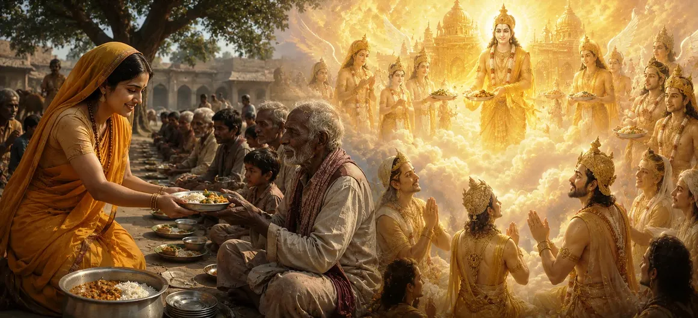

अन्नदान की महिमा
निचले लोकों की गंभीर शुद्धिकरण प्रक्रिया से हटकर, यह प्रवचन व्यावहारिक धर्म पर एक उज्ज्वल अध्याय खोलता है अन्ना दाना-भोजन का पवित्र उपहार। वैदिक दर्शन में, भोजन को ब्रह्म की मूलभूत अभिव्यक्ति के रूप में मनाया जाता है (अन्नं ब्रह्मा), वह महत्वपूर्ण पदार्थ जिसके माध्यम से जीवन शक्ति, मन और ब्रह्मांडीय व्यवस्था निरंतर कायम रहती है।
जबकि दान के अन्य रूप भौतिक आराम या अस्थायी राहत प्रदान करते हैं, किसी भूखी आत्मा को भोजन कराने से तत्काल, निर्विवाद तृप्ति मिलती है। यह शिक्षा स्थापित करती है कि जीवित प्राणियों की शारीरिक भूख को संतुष्ट करने से सीधे उनके भीतर रहने वाली सर्वोच्च चेतना प्रसन्न होती है, जिससे भोजन दान भारी कर्म बोझ के लिए सबसे प्रभावी सक्रिय उपाय बन जाता है।
पवित्र पोषण के स्तंभ
भोजन परम ब्रह्म के रूप में
भोजन को ब्रह्मांडीय जीवन शक्ति और चेतना के प्रत्यक्ष भौतिक अवतार के रूप में मान्यता देता है।
आंतरिक अग्नि को शांत करना
बताते हैं कि कैसे पाचन अग्नि (वैश्वानर) को पोषित करना एक उन्नत पवित्र यज्ञ के रूप में कार्य करता है।
तत्काल आत्मिक संतुष्टि
इस बात पर प्रकाश डाला गया कि अन्न दाना विशिष्ट रूप से प्राप्तकर्ता को तत्काल, पूर्ण राहत प्रदान करता है।
कर्म विघटन
यह प्रदर्शित करता है कि कैसे निःस्वार्थ भोजन वितरण संचित अंधकारमय छापों को निष्क्रिय कर देता है।
सार्वभौमिक समावेशिता
स्थिति या पहचान के आधार पर भेदभाव किए बिना सभी प्राणियों को खाना खिलाने को प्रोत्साहित करता है।
ईश्वरीय कृपा का प्रवेश द्वार
दिखाता है कि कैसे शुद्ध उदारता आध्यात्मिक शुद्धता पैदा करती है, हृदय को ज्ञान के लिए तैयार करती है।
इस पाठ में मुख्य विषय
भोजन और जीवन शक्ति के तत्वमीमांसा
यह खंड इस गहन सत्य पर प्रकाश डालता है कि भोजन केवल एक सांसारिक वस्तु नहीं है, बल्कि ब्रह्मांडीय जीवन शक्ति की प्राथमिक भौतिक अभिव्यक्ति है। सभी देहधारी प्राणी भोजन से जीवित हैं; भोजन के माध्यम से, पांच महत्वपूर्ण वायु (प्राण, अपान, समान, उदान और व्यान) को संतुलन में रखा जाता है, जिससे मन और बुद्धि को कार्य करने की अनुमति मिलती है।
जब कोई किसी भूखे व्यक्ति को पौष्टिक भोजन देता है, तो वह केवल अनाज नहीं देता; व्यक्ति जीवन, ऊर्जा, शक्ति और आध्यात्मिक स्पष्टता का दान करता है। चूँकि भोजन भौतिक अस्तित्व को कायम रखता है, इसलिए भोजन दान को सर्वोच्च उपहार घोषित किया गया है (उत्तम दान) अन्य सभी भौतिक पेशकशों से बढ़कर।
पवित्र वैश्वानर यज्ञ के रूप में भोजन कराना
शिव पुराण खाने और खिलाने पर एक उत्कृष्ट गूढ़ दृष्टिकोण प्रस्तुत करता है: दिव्य उपस्थिति हर जीवित प्राणी के भीतर निवास करती है वैश्वानर, पवित्र पाचन अग्नि। जब किसी भूखे व्यक्ति को भोजन परोसा जाता है, तो यह सीधे तौर पर वैदिक यज्ञ की पवित्र अग्नि में पवित्र आहुति डालने के बराबर होता है।
विस्तृत वेदियाँ बनाने के बजाय, जरूरतमंदों को भोजन कराने वाला एक भक्त निरंतर, जीवित बलिदान करता है। प्राप्तकर्ता द्वारा अनुभव की गई राहत और खुशी की भावना तुरंत भगवान को प्रसन्न करती है जो उनके दिल में रहते हैं, जटिल अनुष्ठानों की आवश्यकता के बिना तत्काल आध्यात्मिक योग्यता लाते हैं।
कर्म प्रायश्चित और सक्रिय शुद्धि
निचले लोकों में भीषण शुद्धिकरण पीड़ा का विवरण देते हुए, शास्त्र अन्न दान को नकारात्मक कर्म परिणामों के खिलाफ सबसे प्रभावी सक्रिय सुरक्षा के रूप में पेश करता है। जबकि जानबूझकर नुकसान और स्वार्थी कृत्य आत्मा पर बोझ डालने वाले घने प्रभाव पैदा करते हैं, भोजन का निस्वार्थ वितरण अत्यधिक सकारात्मक आध्यात्मिक प्रकाश उत्पन्न करता है।
दूसरों की भूख की पीड़ा को कम करके, दाता सक्रिय रूप से अपने स्वयं के पिछले गलत कार्यों के बीज को नष्ट कर देता है। यह एक कर्म ढाल के रूप में कार्य करता है, इस जीवनकाल में गंभीर ऊर्जावान ऋणों को बेअसर करता है और व्यक्ति को इसके बाद तीव्र सुधारात्मक पीड़ा का अनुभव करने से बचाता है।
सार्वभौमिक करुणा और बिना शर्त देना
इस खंड की शिक्षाओं की एक उल्लेखनीय विशेषता व्यापक, गैर-भेदभावपूर्ण दान पर जोर देना है। पाठ इस बात पर जोर देता है कि भोजन देने का गुण पवित्र संतों या विद्वानों का सम्मान करने तक ही सीमित नहीं है; यह संकटग्रस्त प्रत्येक जीवित प्राणी तक फैला हुआ है - जिसमें पशु, पक्षी, भिक्षुक और बहिष्कृत लोग भी शामिल हैं।
भूख एक सार्वभौमिक शारीरिक कमजोरी है जो सभी जीवित प्राणियों को समान रूप से प्रभावित करती है। भगवान शिव को हर भूखे रूप में देखना और सामाजिक स्थिति या पिछले आचरण पर सवाल उठाए बिना भोजन अर्पित करना नियमित दान को सर्वोच्च भक्ति के कार्य में बदल देता है (सेवा).
दाता की मानसिकता और पवित्रता
पाठ इस बात पर प्रकाश डालने का ध्यान रखता है कि अन्न दाना की आध्यात्मिक प्रभावकारिता काफी हद तक दृष्टिकोण पर निर्भर करती है (भाव) दाता का. अभिमान, अहंकार, तिरस्कार या प्रसिद्धि की इच्छा से दिया गया भोजन अपनी अधिकांश आध्यात्मिक शक्ति खो देता है।
इसके विपरीत, गहरी विनम्रता, श्रद्धा और बिना शर्त प्यार के साथ पेश किए गए साधारण भोजन का एक मामूली हिस्सा भी असीमित आध्यात्मिक फल देता है। देने वाले को यह समझ विकसित करनी चाहिए कि वे केवल दैवीय कृपा का एक विनम्र माध्यम हैं, जो प्राप्तकर्ता के भीतर रहने वाले भगवान की सेवा करने के लिए सम्मानित हैं।
दान से आंतरिक तपस्या की ओर परिवर्तन
यह स्थापित करने के बाद कि कैसे निस्वार्थ दान मन को शुद्ध करता है और बाहरी सांसारिक लगाव को दूर करता है, पाठ सामाजिक और सक्रिय गुणों पर अपनी व्याख्या को पूरा करता है। हृदय को करुणा से भरकर और अन्न दान के माध्यम से सकल कर्म संबंधी अशुद्धियों को साफ करके, अभ्यासकर्ता गहन आध्यात्मिक अनुशासन के लिए आवश्यक आंतरिक स्थिरता प्राप्त करता है।
यह दिमाग को विकास के अगले चरण के लिए तैयार करता है। कथा स्वाभाविक रूप से सक्रिय बाह्य दान से अनुशासित आंतरिक तप की ओर परिवर्तित होती है, जो **तपस्या की महिमा** की गहन खोज का मार्ग प्रशस्त करती है, जहां आत्म-संयम, गहन ध्यान और आंतरिक गर्मी शेष सूक्ष्म भ्रमों को जला देती है।
आध्यात्मिक अंतर्दृष्टि
अन्न दाना पर प्रवचन हमें याद दिलाता है कि उच्चतम आध्यात्मिकता व्यावहारिक जीवन से अलग नहीं है। भोजन भौतिक शरीर को दिव्य आत्मा से जोड़ने वाला स्वर्णिम पुल है। अपने भोजन को श्रद्धा के साथ साझा करके और हर भूखे रूप में भगवान शिव को देखकर, हम अपने अहंकार को दूर करते हैं, अपने कर्मों के बही-खाते में सामंजस्य बिठाते हैं, और एक साधारण दैनिक कार्य को मुक्ति के शाश्वत बलिदान में बदल देते हैं।
अक्सर पूछे जाने वाले प्रश्न
① शिव पुराण में अन्न दान को सर्वोच्च दान क्यों माना गया है?
भोजन सभी जीवित प्राणियों में प्राण (जीवन शक्ति) को सीधे बनाए रखता है। भोजन उपहार में देने से तत्काल संतुष्टि मिलती है, सीधे तौर पर शारीरिक कष्ट दूर होते हैं, और भौतिक और आध्यात्मिक जीवन के मूलभूत स्तंभ को कायम रखा जाता है।
② भोजन अर्पित करने से पिछले नकारात्मक कर्म कैसे निष्प्रभावी हो जाते हैं?
विनम्रता के साथ भोजन अर्पित करके, एक दाता प्राप्तकर्ता के भीतर निवास करने वाली दिव्य उपस्थिति (वैश्वानर) को संबोधित करता है। इससे शक्तिशाली सकारात्मक कार्मिक आवेग उत्पन्न होते हैं जो स्वार्थी प्रवृत्तियों और संचित अंधकारमय संस्कारों को नष्ट कर देते हैं।
③ इस शिक्षा के अनुसार अन्नदान प्राप्त करने का पात्र कौन है?
जबकि आध्यात्मिक साधकों और जरूरतमंदों का सम्मान करने से महान पुण्य मिलता है, पाठ स्पष्ट रूप से इस बात पर जोर देता है कि किसी भी भूखे जीवित इकाई को खाना खिलाना - चाहे वह किसी भी सामाजिक पृष्ठभूमि, प्रजाति या स्थिति का हो - भगवान शिव को प्रत्यक्ष प्रसाद के रूप में कार्य करता है।